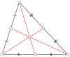

centroid

Definition: In mathematics and physics, the centroid, also known as geometric center or center of figure, of a plane figure or solid figure is the arithmetic mean position of all the points in the surface of the figure. The same definition extends to any object in n-dimensional Euclidean space.In geometry, one often assumes uniform mass density, in which case the barycenter or center of mass coincides with the centroid. Informally, it can be understood as the point at which a cutout of the shape (with uniformly distributed mass) could be perfectly balanced on the tip of a pin.In physics, if variations in gravity are considered, then a center of gravity can be defined as the weighted mean of all points weighted by their specific weight.
Source: Wikipedia
Wikipedia Page
Wikidata Page